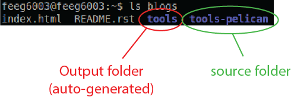
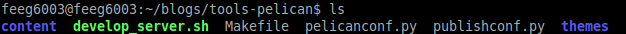
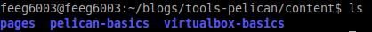
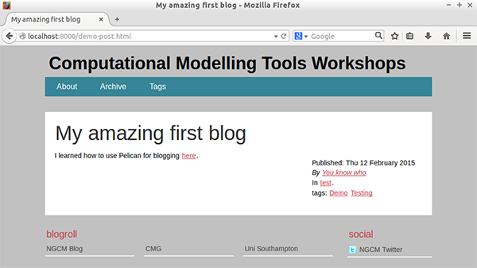

Pelican is a static web site generator implemented in Python. It rgenerates HTML pages and blog posts from Markdown or reStructuredText source files. Pelican is very lightweight, uses the Jinja2 templating engine to generate HTML, and supports themes.
Prepare environment
The tools that we will need are
- Pelican 3.5.0 (obviously)
- Make (for conveniently generating the HTML code and serving a local webserver)
- Python 2.x (Pelican works best with Python 2.x)
- Mercurial (The blog post repository uses Mercurial)
If you want to use Markdown, you also need to install a python library for it. It might be useful to also install a text editor that supports syntax highlighting for Markdown and/or reStructuredText.
Obtain virtual machine
We will use a virtual machine for this tutorial. Install VirtualBox on your system (if you have not done so before). Refer to the VirtualBox post for further guidance on how to setup VirtualBox.
Getting Pelican - The easy way
You can use the lubuntu image that you have already seen last week with Pelican and Mercurial preinstalled by downloading this lubuntu image. You might want to install the Guest Additions still.
Getting Pelican - The educational way
You can also take the clean lubuntu image as a starting point and install the needed tools yourself. It is relatively easy to install Pelican on your machine as well. A separate blog post gives you a step-by-step guide for installing Pelican and Mercurial. You might want to install the Guest Additions still.
Obtaining the webpage repository
- Webpage: http://computationalmodelling.bitbucket.org
- Repository: http://bitbucket.org/computationalmodelling/computationalmodelling.bitbucket.org
The tools blog is hosted on bitbucket.org
For now, we will simply clone the repository to create a local copy to host your changes. This command will clone the repository into a "blogs" folder in the current directory.
git clone http://bitbucket.org/computationalmodelling/computationalmodelling.bitbucket.org blogs
Hint: You should forge the repository to work on your own blogs. You will need a bitbucket account to forge the repository and send a pull request to have your changes merged back into the hosting repository. That might make it easier for you as a group to work on your material as you can use the benefits of distributed version control and provides a simple way for us to merge your additions back into the main repository.
Structure of the repository
The blogs folder now contains the repository of the tools webpage. Have a look at the subdirectories
ls blogs

There are two folders in the repository
- tools - holds the output from Pelican
- tools-pelican - is the folder that holds all the source data
Change into the source folder
cd blogs/tools-pelican
and have a look at the existing files
ls

The most important folder is content, which will hold the fruits of your labour. In addition, there are
- two python scripts for configuration purposes
- a folder for themes, containing the default one that we use for the published site
- a start script for a local web server (which we will not use)
- and a Makefile that goes with the make utility and defines a number of program calls that we need frequently
Feel free to have a look at the Makefile.
Conventions for the blogs repository
In order to work smoothly together, we have to follow a few rules. The most important one:
- All changes should be local to the content folder
- Leave the config files alone. We will not merge changes to the main repo anyway.
- Work within your own subdirectory under content
If you observe these rules, it should be a breeze to merge your content into the webpage.
Starting your own blog
Pelican understands the following 'dialects': reStructuredText (.rst) and Markdown (.md). While reStructuredText originates from the coding community for source code comments, it is also useful for simple webpages. Markdown was invented by John Gruber (the Apple blogger) to help him with writing and maintaining his blog Daring Fireball. The Markdown syntax is still evolving via a number of implementations that each has their own oddities.
Change into the content folder and look at its content
cd content
ls

We have pre-populated the blog repository with the source files for the virtualbox-basics blog and the pelican-basics blog. You also find a folder to hold other pages like the ubiquitous "About" page. Content in the pages folder is not seen as a blog post by Pelican and converted slightly differently into HTML.
The pelican-basics blog is written using Markdown, while the virtualbox-basics blog uses reStructuredText. Have a look at both to get a feeling for the syntax of each.
Its an emotional moment: time to start your own blog!
Create a folder within "content" to hold your files. Give it a meaningful name.
mkdir <my_name>
cd <my_name>
It is time to start your first blog post. You can, of course, use your most-trusted text editor for writing your blogs, but for now we should go with nano. The lubuntu distribution provides only very limited choices out of the box, basically vim and nano. It is, nonetheless, relatively easy to install an alternative using the usual package manager approach.
Start writing a new file in Markdown with
nano <my_blog_post_name>.md
or
nano <my_blog_post_name>.rst
if you work in reStructuredText.
Metadata
Each blog post should come with some useful metadata. Pelican uses this data when generating the site. It should contain:
- the title of your post,
- the authors,
- the date and
- a number of tags to sort the post into categories.
A metadata block could look like
title: My amazing first blog
authors: You know who
date: 2015-02-12
tags: demo, training
slug: demo-post
in Markdown, or
:title: My amazing first blog
:authors: You know who
:date: 2015-02-12
:tags: Demo, Testing
:slug: demo-post
if you use reStructuredText. Note the slug attribute, which will be used by Pelican to build the URL.
Linking to internal files
You most likely want to link to other files in the repository. Pelican provides the {filename} variable for this purpose, which points to the content folder. You should always refer to the source file, not the generated file in the output folder. Pelican is smart enough to translate this for you. So if you want to reference this blog post for instance, you would write
I learned how to use Pelican for blogging [here]({filename/pelican-basics/pelican-basics.md})
or
I learned how to use Pelican for blogging `here <{filename}/pelican-basics/pelican-basics.md`_
Building and viewing your page
Once you have started writing your blog post, you most-likely want to check how it looks from time to time. Save your changes (Ctrl+O in nano), leave the text editor (Ctrl+X in nano), and change back to the "tools-pelican" directory
cd ../..
You can run Pelican and generate the static HTML page by calling
make html
That uses the make utility to call Pelican and make sure that the output goes into the tools folder. Once Pelican is done, you can test the page by starting a local web server
make serve
and pointing the web browser at
http://localhost:8000

More help and resources
- The tutorial slides (TeX beamer sources)
- The Pelican documentation (also contains a good syntax section)
- The Markdown syntax
- A primer on reStructuredTex